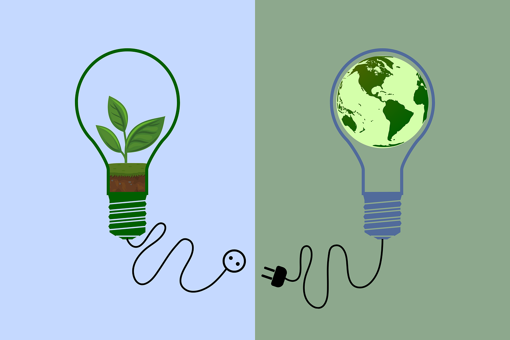
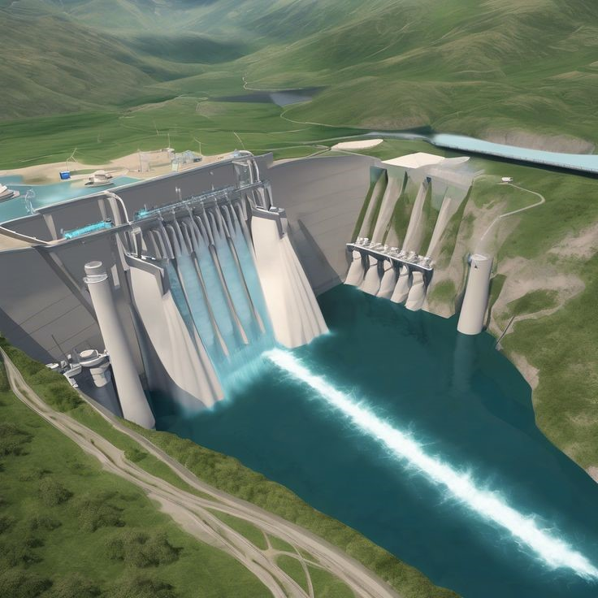
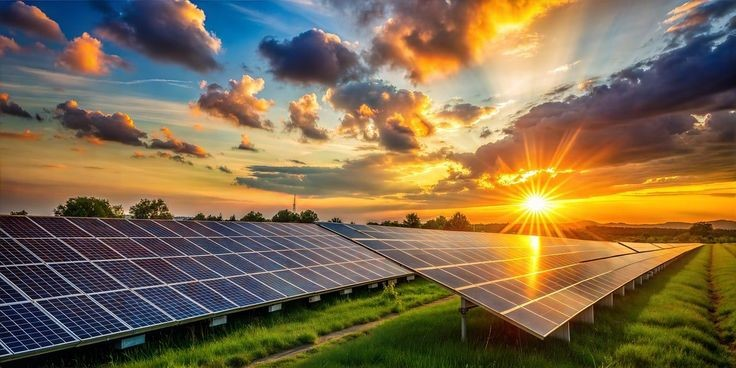
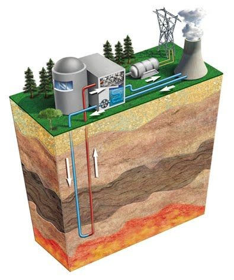

¿Qué es la energía renovable?

Se denomina “energías renovables” a aquellas fuentes energéticas basadas en la utilización del sol, el viento, el agua o la biomasa vegetal o animal -entre otras-. Se caracterizan por no utilizar combustibles fósiles –como sucede con las energías convencionales-, sino recursos capaces de renovarse ilimitadamente. Su impacto ambiental es de menor magnitud dado que además de no emplear recursos finitos, no generan contaminantes. Sus beneficios van desde la diversificación de la matriz energética del país hasta el fomento a la industria nacional; y desde el desarrollo de las economías regionales hasta el impulso al turismo.

ENERGÍA HIDROELÉCTRICA
Es un tipo de energía renovable que se genera a partir de la fuerza del agua en movimiento, principalmente a través de centrales hidroeléctricas. Se utiliza para producir electricidad de forma limpia y eficiente, aprovechando la energía potencial y cinética del agua.
Las centrales hidroeléctricas utilizan embalses, normalmente creados mediante presas aguas arriba, para contener la fuerza potencial del agua.

ENERGÍA SOLAR
Es aquella que se obtiene a partir del sol en forma de radiación electromagnética (luz, calor y rayos ultravioleta). Mediante la instalación de paneles solares, se puede utilizar para obtener energía térmica (sistema fototérmico) o para generar electricidad (sistema fotovoltaico).
La energía solar es uno de los principales tipos de energía renovable y tiene un papel clave en la transición energética. Ayuda a impulsar economías más respetuosas que protejan el medioambiente, mejoren el bienestar de las personas y garanticen la viabilidad de las empresas.
ENERGÍA EÓLICA
La energía eólica es aquella que se obtiene a partir de la fuerza del viento, a través de un aerogenerador que transforma la energía cinética de las corrientes de aire en energía eléctrica.
El proceso de extracción se realiza principalmente gracias al rotor, que transforma la energía cinética en energía mecánica, y al generador, que transforma dicha energía mecánica en eléctrica. Hablamos de una energía renovable, eficiente, madura y segura clave para la transición energética y la descarbonización de la economía.

ENERGÍA GEOTÉRMICA
Permite utilizar el calor del interior de la tierra para obtener electricidad, agua caliente y calefacción, ofreciendo una alternativa a los combustibles fósiles.
Se considera una energía renovable y limpia. El calor que proporciona es ilimitado y la temperatura del subsuelo es muy estable, lo que permite obtener rendimientos energéticos elevados.